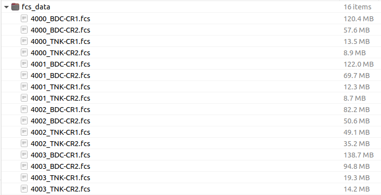

Flow cytometry data (regardless of the type of instrument used) is generally saved as a .fcs file. This file is populated with various parameters: such as userid, instrumentid,
Start by installing and loading the Cytoverse package flowCore hosted at bioconductor.org. This package allows us to read and manipulate the .fcs file in R.
install.packages("BioManager")
BiocManager::install("flowCore")
library("flowCore")
library(CytoverseBioc2023)## Loading required package: Biobase## Loading required package: BiocGenerics##
## Attaching package: 'BiocGenerics'## The following object is masked from 'package:flowCore':
##
## normalize## The following objects are masked from 'package:stats':
##
## IQR, mad, sd, var, xtabs## The following objects are masked from 'package:base':
##
## anyDuplicated, aperm, append, as.data.frame, basename, cbind,
## colnames, dirname, do.call, duplicated, eval, evalq, Filter, Find,
## get, grep, grepl, intersect, is.unsorted, lapply, Map, mapply,
## match, mget, order, paste, pmax, pmax.int, pmin, pmin.int,
## Position, rank, rbind, Reduce, rownames, sapply, setdiff, sort,
## table, tapply, union, unique, unsplit, which.max, which.min## Welcome to Bioconductor
##
## Vignettes contain introductory material; view with
## 'browseVignettes()'. To cite Bioconductor, see
## 'citation("Biobase")', and for packages 'citation("pkgname")'.## Loading required package: flowWorkspace## As part of improvements to flowWorkspace, some behavior of
## GatingSet objects has changed. For details, please read the section
## titled "The cytoframe and cytoset classes" in the package vignette:
##
## vignette("flowWorkspace-Introduction", "flowWorkspace")## Loading required package: ggcyto## Loading required package: ggplot2## Loading required package: ncdfFlow## Loading required package: BH## Loading required package: openCyto## Warning: replacing previous import 'flowViz::contour' by 'graphics::contour'
## when loading 'flowStats'There are 3 approaches to read in FCS files:
Note: We will revisit flowSet and cytoset
The function read.FCS is used to read in individual
files as a flowFrame object.
Normally, you might download a folder with a set of FCS files and interact with that. For instance,
knitr::include_graphics("images/example_fcs_path.png")
For technical reasons, we can’t easily distribute the FCS files in
this way, but instead reference them through a file cache that is
populated once. But this is just a glorified set of folders. If you want
to explore it, you can examine it with
BiocFileCache::bfcquery(CytoverseBioc2023::bfc).
ff <- read.FCS(get_workshop_data("data/fcs_data/4000_TNK-CR1.fcs")$rpath)
# a flowFrame object
ff## flowFrame object '210217_COVID-CR_TNK-CR1_Run 1_Samples_Plate 1_A1_A01_001.fcs'
## with 102015 cells and 33 observables:
## name desc range minRange maxRange
## $P1 FSC-A NA 262144 0.0000 262144
## $P2 FSC-H NA 262144 0.0000 262144
## $P3 SSC-A NA 262144 0.0000 262144
## $P4 B515-A TCR Vd1 FITC 262144 -15.6344 262144
## $P5 B610-A CD127 BB630 262144 -28.6509 262144
## ... ... ... ... ... ...
## $P29 V710-A TCR Va7_2 BV711 262144 -56.8302 262144
## $P30 V750-A CX3CR1 BV750 262144 -94.4459 262144
## $P31 V785-A CD27 BV786 262144 -68.9282 262144
## $P32 remove_from_FS_FM QC 262144 0.0000 262144
## $P33 Time NA 94 0.0000 20000
## 326 keywords are stored in the 'description' slotThe flowFrame object has 3 slots where various data is
stored.
@exprs stores the expression matrix (i.e. the collected
data). Can be accessed via exprs(ff)
@parameters stores information pertaining to channels:
channel name, marker description,and data ranges as AnnotatedDataFrame.
Can be accessed via parameters(ff)
@description stores additional information extracted
from the FCS file header. The FCS file header follow ISAC guidelines.
Visit here for
more information. Can be accessed via description(ff)
flowFrame
Working with a flowFrame object is going to be very
similar to working with a dataframe in R.
A few useful definitions that help us get oriented with the
underlying data in the flowFrame object.
Channels: Instrument derived labels of various
parameters that were measured. Channels are the column names of the
flowFrame. Any data generated from the same instrument will
have the same (similar) Channel names. Markers: User
provided labels for various parameters that were measured. For example:
Channel name: B710-A, Marker name: CD3. Marker names are set by the
users, may not be unique across experiments/users.
Expression: Measured values. A matrix where every row
is an event (frequently a cell) and every column is a channel.
Examples:
# channels
colnames(ff)## [1] "FSC-A" "FSC-H" "SSC-A"
## [4] "B515-A" "B610-A" "B660-A"
## [7] "B710-A" "B780-A" "G575-A"
## [10] "G610-A" "G660-A" "G710-A"
## [13] "G780-A" "R670-A" "R730-A"
## [16] "R780-A" "U390-A" "U450-A"
## [19] "U500-A" "U570-A" "U660-A"
## [22] "U740-A" "U785-A" "V450-A"
## [25] "V510-A" "V570-A" "V605-A"
## [28] "V655-A" "V710-A" "V750-A"
## [31] "V785-A" "remove_from_FS_FM" "Time"
# markernames
markernames(ff)## B515-A B610-A B660-A
## "TCR Vd1 FITC" "CD127 BB630" "PD1 BB660"
## B710-A B780-A G575-A
## "CD16 BB700" "CXCR5 BB790" "TCR Vg9 PE"
## G610-A G660-A G710-A
## "TCR Vd2 PE-CF594" "CD161 PE-Cy5" "HLA-DR PE-Cy55"
## G780-A R670-A R730-A
## "CCR1 PE-Cy7" "CD1d:PBS57 tet APC" "CD45RA Ax700"
## R780-A U390-A U450-A
## "XCR1 APC-Fire750" "CCR3 BUV395" "Live Dead UV Blue"
## U500-A U570-A U660-A
## "CCR7 BUV496" "CD56 BUV563" "CD39 BUV661"
## U740-A U785-A V450-A
## "CD95 BUV737" "CD4 BUV805" "CCR2 BV421"
## V510-A V570-A V605-A
## "CD3 BV510" "CD8a BV570" "CD38 BV605"
## V655-A V710-A V750-A
## "CCR5 BV650" "TCR Va7_2 BV711" "CX3CR1 BV750"
## V785-A remove_from_FS_FM
## "CD27 BV786" "QC"
# expression
exprs(ff)[1:5,1:5]## FSC-A FSC-H SSC-A B515-A B610-A
## [1,] 103038.81 88791.99 519.6562 345.1194 2290.9805
## [2,] 94411.01 79966.73 926.6454 327.2972 2667.8779
## [3,] 93067.27 76786.17 917.7739 335.5514 2857.0173
## [4,] 94072.62 87279.86 337.3925 252.7754 895.4494
## [5,] 102544.66 81934.16 626.8440 760.3972 2160.2334Notice that there is a correspondence between channels, markers, and
the expression matrix. i.e. the names of the named vector
markernames(ff) are a subset of the columns of the
expression matrix exprs(ff) as well as the columns of the
flowFrame.
# interested marker: CD4
marker_cd4 <- markernames(ff)[grepl(pattern = "CD4 ",x = markernames(ff))]
marker_cd4## U785-A
## "CD4 BUV805"## [1] 2191.3669 2586.0300 3177.3501 486.9400 691.0447 556.0515
# subset flowFrame by column
s_ff <- ff[,names(marker_cd4)]
s_ff## flowFrame object '210217_COVID-CR_TNK-CR1_Run 1_Samples_Plate 1_A1_A01_001.fcs'
## with 102015 cells and 1 observables:
## name desc range minRange maxRange
## $P23 U785-A CD4 BUV805 262144 -80.5002 262144
## 326 keywords are stored in the 'description' slot
# subset flowFrame by row
s2_ff <- ff[1:100,]
s2_ff## flowFrame object '210217_COVID-CR_TNK-CR1_Run 1_Samples_Plate 1_A1_A01_001.fcs'
## with 100 cells and 33 observables:
## name desc range minRange maxRange
## $P1 FSC-A NA 262144 0.0000 262144
## $P2 FSC-H NA 262144 0.0000 262144
## $P3 SSC-A NA 262144 0.0000 262144
## $P4 B515-A TCR Vd1 FITC 262144 -15.6344 262144
## $P5 B610-A CD127 BB630 262144 -28.6509 262144
## ... ... ... ... ... ...
## $P29 V710-A TCR Va7_2 BV711 262144 -56.8302 262144
## $P30 V750-A CX3CR1 BV750 262144 -94.4459 262144
## $P31 V785-A CD27 BV786 262144 -68.9282 262144
## $P32 remove_from_FS_FM QC 262144 0.0000 262144
## $P33 Time NA 94 0.0000 20000
## 326 keywords are stored in the 'description' slotNotice that the subset operation can be applied directly to the
flowFrame object so that information regarding the file is
preserved.
Often <- can be used to manipulate the
flowFrame object.
Example:
# create a new markername
new_name <- c("U785-A" = "test")
# old markernames
markernames(s_ff)## U785-A
## "CD4 BUV805"
# set new markername
markernames(s_ff) <- new_name
markernames(s_ff)## U785-A
## "test"
# manipulating expression values
# notice the data range
s_ff## flowFrame object '210217_COVID-CR_TNK-CR1_Run 1_Samples_Plate 1_A1_A01_001.fcs'
## with 102015 cells and 1 observables:
## name desc range minRange maxRange
## $P23 U785-A test 262144 -80.5002 262144
## 326 keywords are stored in the 'description' slot## flowFrame object '210217_COVID-CR_TNK-CR1_Run 1_Samples_Plate 1_A1_A01_001.fcs'
## with 102015 cells and 1 observables:
## name desc range minRange maxRange
## $P23 U785-A test 262144 -80.5002 262144
## 326 keywords are stored in the 'description' slotNotice that the data range was not updated when we used
<- to change the underlying expression matrix. A good
practice is to use transform function to transform the
underlying expression matrix. Moreover, transform can also
be used to add new columns to the flowFrame.
Example
# define the transformation
simple_trans <- function(x)x/100
# create a transformList
# this indicates which columns to transform and what transformation to do
t_list <- flowCore::transformList(c("U785-A"),simple_trans)
# before transformation
range(s_ff)## U785-A
## min -80.50024
## max 262144.00000## U785-A
## min -0.8050024
## max 2621.4400000
# add a new column
s_ff_trans <- flowCore::transform(s_ff,"New_col" = simple_trans(`U785-A`))
s_ff_trans## flowFrame object '210217_COVID-CR_TNK-CR1_Run 1_Samples_Plate 1_A1_A01_001.fcs'
## with 102015 cells and 2 observables:
## name desc range minRange maxRange
## $P23 U785-A test 262144 -80.500244 262144.00
## $P2 New_col derived from transfo.. 262144 -0.805002 2621.44
## 326 keywords are stored in the 'description' slotflowSet or
cytoset
In an experimental sense, a single FCS file is not very interesting
(of course, this is not always true!). When there are a set of FCS files
they can be loaded into R either as a flowSet or a
cytoset.
flowSet/cytoset: A collection of FCS files, preferably, but not necessarily from the same panel/experiment.
Note: difference between flowSet and
cytoset is the underlying representation of the data.
cytoset is implemented in the package
flowWorkspace which we will encounter in more detail later.
Additionally, cytoset is built upon a collection of
cytoframe, analogous to flowFrame.
Options to create flowSet
# steps to create flowSet
# option 1
# load fcs files as a list
fcs_list <- lapply(X = get_workshop_data(path = "data/fcs_data/")$rpath,FUN = read.FCS)
# convert to flowSet
fs <- as(fcs_list,"flowSet")
fs## A flowSet with 16 experiments.
##
## column names(33): FSC-A FSC-H ... remove_from_FS_FM Time
# option 2 (preferred)
fs <- read.flowSet(files = get_workshop_data(path = "data/fcs_data/")$rpath)
fs## A flowSet with 16 experiments.
##
## column names(33): FSC-A FSC-H ... remove_from_FS_FM TimeOptions to create a cytoset
require(flowWorkspace)
# option 1 (preferred)
cs <- load_cytoset_from_fcs(files = get_workshop_data(path = "data/fcs_data/")$rpath)
# option 2 (convert flowSet to cytoset)
cs <- flowSet_to_cytoset(fs)
cs## A cytoset with 16 samples.
##
## column names:
## FSC-A, FSC-H, SSC-A, B515-A, B610-A, B660-A, B710-A, B780-A, G575-A, G610-A, G660-A, G710-A, G780-A, R670-A, R730-A, R780-A, U390-A, U450-A, U500-A, U570-A, U660-A, U740-A, U785-A, V450-A, V510-A, V570-A, V605-A, V655-A, V710-A, V750-A, V785-A, remove_from_FS_FM, TimeGenerally, each experiment has unique metadata properties that can
(and should) be supplied to the flowSet and
cytoset. These can be added to by using
pData(x) <- data.frame.
# create metadata
metadata <- data.frame(row.names = sampleNames(fs),
Treatment = sample(c("Untreated","Treated"),length(fs), replace = TRUE),
panel = ifelse(grepl(pattern = "TNK",x = sampleNames(fs)),"T Cell Panel","Myeloid Panel"))
# prior to providing metadata
pData(fs)## name
## b97615bf0a5_4000_BDC-CR1.fcs b97615bf0a5_4000_BDC-CR1.fcs
## b9711543845_4000_BDC-CR2.fcs b9711543845_4000_BDC-CR2.fcs
## b977d45bce0_4000_TNK-CR1.fcs b977d45bce0_4000_TNK-CR1.fcs
## b9748bb2acf_4000_TNK-CR2.fcs b9748bb2acf_4000_TNK-CR2.fcs
## b972c30fdef_4001_BDC-CR1.fcs b972c30fdef_4001_BDC-CR1.fcs
## b973f63eb39_4001_BDC-CR2.fcs b973f63eb39_4001_BDC-CR2.fcs
## b972b7e203_4001_TNK-CR1.fcs b972b7e203_4001_TNK-CR1.fcs
## b9770c0c3ee_4001_TNK-CR2.fcs b9770c0c3ee_4001_TNK-CR2.fcs
## b974e93be1c_4002_BDC-CR1.fcs b974e93be1c_4002_BDC-CR1.fcs
## b976efe113c_4002_BDC-CR2.fcs b976efe113c_4002_BDC-CR2.fcs
## b9752f2a967_4002_TNK-CR1.fcs b9752f2a967_4002_TNK-CR1.fcs
## b973dcd50cc_4002_TNK-CR2.fcs b973dcd50cc_4002_TNK-CR2.fcs
## b9724ab3921_4003_BDC-CR1.fcs b9724ab3921_4003_BDC-CR1.fcs
## b9773f7bc42_4003_BDC-CR2.fcs b9773f7bc42_4003_BDC-CR2.fcs
## b9720901b1c_4003_TNK-CR1.fcs b9720901b1c_4003_TNK-CR1.fcs
## b974c518dbf_4003_TNK-CR2.fcs b974c518dbf_4003_TNK-CR2.fcs## Treatment panel
## b97615bf0a5_4000_BDC-CR1.fcs Treated Myeloid Panel
## b9711543845_4000_BDC-CR2.fcs Treated Myeloid Panel
## b977d45bce0_4000_TNK-CR1.fcs Treated T Cell Panel
## b9748bb2acf_4000_TNK-CR2.fcs Treated T Cell Panel
## b972c30fdef_4001_BDC-CR1.fcs Untreated Myeloid Panel
## b973f63eb39_4001_BDC-CR2.fcs Untreated Myeloid Panel
## b972b7e203_4001_TNK-CR1.fcs Untreated T Cell Panel
## b9770c0c3ee_4001_TNK-CR2.fcs Treated T Cell Panel
## b974e93be1c_4002_BDC-CR1.fcs Untreated Myeloid Panel
## b976efe113c_4002_BDC-CR2.fcs Treated Myeloid Panel
## b9752f2a967_4002_TNK-CR1.fcs Untreated T Cell Panel
## b973dcd50cc_4002_TNK-CR2.fcs Untreated T Cell Panel
## b9724ab3921_4003_BDC-CR1.fcs Untreated Myeloid Panel
## b9773f7bc42_4003_BDC-CR2.fcs Untreated Myeloid Panel
## b9720901b1c_4003_TNK-CR1.fcs Untreated T Cell Panel
## b974c518dbf_4003_TNK-CR2.fcs Treated T Cell Panel
## name
## b97615bf0a5_4000_BDC-CR1.fcs b97615bf0a5_4000_BDC-CR1.fcs
## b9711543845_4000_BDC-CR2.fcs b9711543845_4000_BDC-CR2.fcs
## b977d45bce0_4000_TNK-CR1.fcs b977d45bce0_4000_TNK-CR1.fcs
## b9748bb2acf_4000_TNK-CR2.fcs b9748bb2acf_4000_TNK-CR2.fcs
## b972c30fdef_4001_BDC-CR1.fcs b972c30fdef_4001_BDC-CR1.fcs
## b973f63eb39_4001_BDC-CR2.fcs b973f63eb39_4001_BDC-CR2.fcs
## b972b7e203_4001_TNK-CR1.fcs b972b7e203_4001_TNK-CR1.fcs
## b9770c0c3ee_4001_TNK-CR2.fcs b9770c0c3ee_4001_TNK-CR2.fcs
## b974e93be1c_4002_BDC-CR1.fcs b974e93be1c_4002_BDC-CR1.fcs
## b976efe113c_4002_BDC-CR2.fcs b976efe113c_4002_BDC-CR2.fcs
## b9752f2a967_4002_TNK-CR1.fcs b9752f2a967_4002_TNK-CR1.fcs
## b973dcd50cc_4002_TNK-CR2.fcs b973dcd50cc_4002_TNK-CR2.fcs
## b9724ab3921_4003_BDC-CR1.fcs b9724ab3921_4003_BDC-CR1.fcs
## b9773f7bc42_4003_BDC-CR2.fcs b9773f7bc42_4003_BDC-CR2.fcs
## b9720901b1c_4003_TNK-CR1.fcs b9720901b1c_4003_TNK-CR1.fcs
## b974c518dbf_4003_TNK-CR2.fcs b974c518dbf_4003_TNK-CR2.fcsThe benefit having metadata is that we can use many of the
sub-setting operations in a metadata specific manner. Note: Many of
the sub-setting operation for flowFrame is also applicable
for flowSet and cytoset. Important
distinction, however, is that subset operation for cytoset
will not create a copy of the data and will point to the same set on
disk.
This is much more convenient than going back and forth between the files.
Example:
# subset by files that have myeloid staining panel
fs_myeloid <- fs[pData(fs)[["panel"]] == "Myeloid Panel"
,]
fs_myeloid## A flowSet with 8 experiments.
##
## column names(33): FSC-A FSC-H ... remove_from_FS_FM Time
pData(fs_myeloid)## Treatment panel
## b97615bf0a5_4000_BDC-CR1.fcs Treated Myeloid Panel
## b9711543845_4000_BDC-CR2.fcs Treated Myeloid Panel
## b972c30fdef_4001_BDC-CR1.fcs Untreated Myeloid Panel
## b973f63eb39_4001_BDC-CR2.fcs Untreated Myeloid Panel
## b974e93be1c_4002_BDC-CR1.fcs Untreated Myeloid Panel
## b976efe113c_4002_BDC-CR2.fcs Treated Myeloid Panel
## b9724ab3921_4003_BDC-CR1.fcs Untreated Myeloid Panel
## b9773f7bc42_4003_BDC-CR2.fcs Untreated Myeloid Panel
## name
## b97615bf0a5_4000_BDC-CR1.fcs b97615bf0a5_4000_BDC-CR1.fcs
## b9711543845_4000_BDC-CR2.fcs b9711543845_4000_BDC-CR2.fcs
## b972c30fdef_4001_BDC-CR1.fcs b972c30fdef_4001_BDC-CR1.fcs
## b973f63eb39_4001_BDC-CR2.fcs b973f63eb39_4001_BDC-CR2.fcs
## b974e93be1c_4002_BDC-CR1.fcs b974e93be1c_4002_BDC-CR1.fcs
## b976efe113c_4002_BDC-CR2.fcs b976efe113c_4002_BDC-CR2.fcs
## b9724ab3921_4003_BDC-CR1.fcs b9724ab3921_4003_BDC-CR1.fcs
## b9773f7bc42_4003_BDC-CR2.fcs b9773f7bc42_4003_BDC-CR2.fcsExample of cytoset sub-setting
## [1] -110.3859 22591.7363## [1] -110.3859 22591.7363
# create a transformList
trans <- transformList("B515-A",asinh)
# transform
cs_small <- transform(cs_small,trans)
# after transformation
range(exprs(cs_small[[1]])[,"B515-A"])## [1] -5.397151 10.718487## [1] -5.397151 10.718487As you see, the transformation was applied to a subset
cs_small however the original cs was also
altered highlighting that both objects were pointing to the same data.
To perform a deep copy we can use realize_view()
## [1] -85.39705 14721.02832
# subset and show prior to transformation
cs_small2 <- realize_view(cs[2])
range(exprs(cs_small2[[1]])[,"B515-A"])## [1] -85.39705 14721.02832
# create a transformList
trans <- transformList("B515-A",asinh)
# transform
cs_small2 <- transform(cs_small2,trans)
# after transformation
range(exprs(cs_small2[[1]])[,"B515-A"])## [1] -5.140493 10.290179## [1] -85.39705 14721.02832Notice that cs is left unchanged.
flowSet and
cytoset
Lastly, we can also add additional FCS files to a
flowSet or cytoset using
rbind2(flowSet1,flowFrame) or
cs_add_cytoframe.
# add to flowSet
fs_small <- fs[1]
fs_small## A flowSet with 1 experiments.
##
## column names(33): FSC-A FSC-H ... remove_from_FS_FM Time
# add a flowFrame
fs_small <- rbind2(fs_small, fs[[2]]) # fs[[2]] results in a flowFrame
fs_small## A flowSet with 2 experiments.
##
## column names(33): FSC-A FSC-H ... remove_from_FS_FM Time
# add a flowSet
fs_small <- rbind2(fs_small, fs[3]) # fs[3] results in a flowSet
fs_small## A flowSet with 3 experiments.
##
## column names(33): FSC-A FSC-H ... remove_from_FS_FM Time
# add to cytoset
cs_small <- realize_view(cs[1]) # deep copy
cs_small## A cytoset with 1 samples.
##
## column names:
## FSC-A, FSC-H, SSC-A, B515-A, B610-A, B660-A, B710-A, B780-A, G575-A, G610-A, G660-A, G710-A, G780-A, R670-A, R730-A, R780-A, U390-A, U450-A, U500-A, U570-A, U660-A, U740-A, U785-A, V450-A, V510-A, V570-A, V605-A, V655-A, V710-A, V750-A, V785-A, remove_from_FS_FM, Time
# no need to point to cs_small
cs_add_cytoframe(cs = cs_small, sn = "Sample Name", cf = cs[[3]]) # cs[[3]] results in a cytoframe
cs_small## A cytoset with 2 samples.
##
## column names:
## FSC-A, FSC-H, SSC-A, B515-A, B610-A, B660-A, B710-A, B780-A, G575-A, G610-A, G660-A, G710-A, G780-A, R670-A, R730-A, R780-A, U390-A, U450-A, U500-A, U570-A, U660-A, U740-A, U785-A, V450-A, V510-A, V570-A, V605-A, V655-A, V710-A, V750-A, V785-A, remove_from_FS_FM, Time